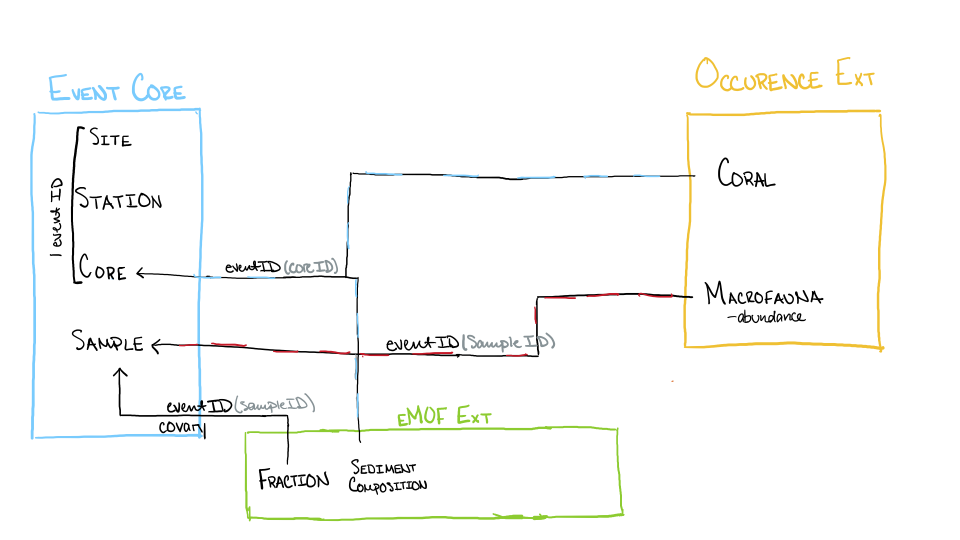
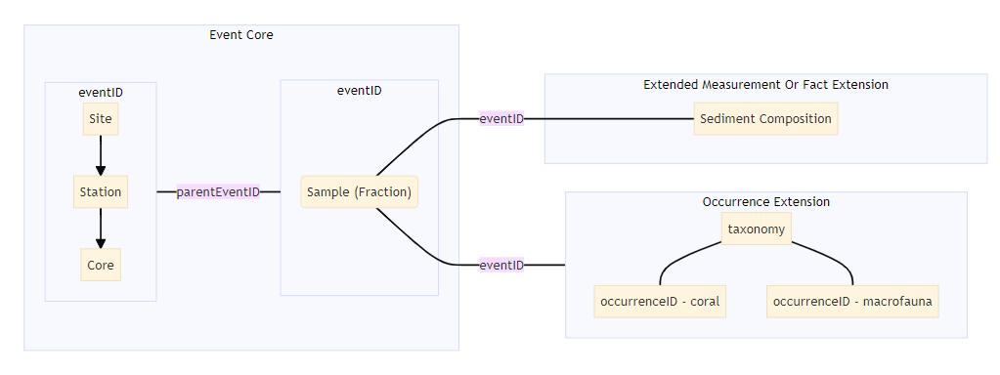

![]()
library(dplyr)
library(sbtools)
library(stringr)
library(worrms)
library(tidyr)
sb_id <- '5a709594e4b0a9a2e9d88e4e'
sb_filenames <- item_list_files(sb_id = sb_id)
BTA <-readr::read_csv(file = sb_filenames$url[1])
Infauna <- readr::read_csv(file = sb_filenames$url[2])
SedChem <- readr::read_csv(file = sb_filenames$url[3])DRAFT, UNDER DEVELOPMENT: Demopoulos Lab OBIS Mobilization Workflow
An elegant guide to mobilizing data to OBIS for the discerning member of the Demopoulos lab.
Purpose
This notebook aims to provide a general workflow for mobilizing the Demopoulos Lab’s data to OBIS to use in the future for similar tasks. Using an existing dataset as an example, we will walk through some brief contextual information; understanding, wrangling, and reconfiguring the data; adding metadata; and the publishing process.
Open Science, OBIS, and GBIF
Open Science and FAIR Data
Open science is the practice of making data, resources, results, and publications as available as possible, while still respecting diverse cultures, security, and privacy.
FAIR data is data that is findable, accessible, interoperable, and reusable. While the two often go hand-in-hand, FAIRness doesn’t require openness. However, by practicing the principles of open and FAIR science, we promote transparency in the scientific process. This transparency encourages collaboration, more efficient scientific advancements, and policy changes, while also increasing the impact of research.
OBIS and GBIF
The Ocean Biodiversity Information System (OBIS) and Global Biodiversity Information Facility (GBIF) are international networks that mobilize data to provide free, open access to biodiversity data. They promote global scientific collaboration and open science as pillars of their missions, which is facilitated by the use of data standards and FAIR principles.
What is Darwin Core?
Darwin Core (DwC) is a set of data standards from Biodiversity Information Standards (TDWG). It includes standardized vocabulary and file format for Darwin Core Archives, which contains an event or occurrence core file, extension files, and metadata files.
DwC is used by both OBIS and GBIF to help facilitate the sharing of open biological data in accordance with the FAIR principles.
What is EML?
Ecological Metadata Language (EML)
Intended User
Dataset Background
What data are we using in this notebook?
We will be using data published by USGS, titled “Sediment macrofaunal composition, sediment grain size, and taxa functional traits of multiple deep-sea coral habitats in the Gulf of Mexico, 2009-2014”, collected by Dr. Amanda Demopoulos and Dr. Jill Bourque. DOI: https://doi.org/10.5066/F7TH8KXD
This data describes a series of sampling events where cores are taken near one of several types coral and analyzed for sediment composition or subsampled for macrofauna.
Getting a feel for the data
Starting to understand the data we are working with may not require a computer. Simple diagrams and maps can be very useful in this stage to understand the relationships and information provided in a dataset. To get started, it’s valuable to model the data and begin the process of mapping terms to DwC vocabulary.
Modeling the Data
Modeling the data and the relationships may be essential in understanding more complex datasets or those with multiple, related tables. This can be done with simple hand drawn diagrams or computer-generated diagrams, like mermaid diagrams.


Mapping to Darwin Core
Once we have a better grasp on the relationships in our data and what cores or extensions we might use, deciding what DwC terms to use becomes easier. Going through each column, we will need to determine what DwC terms are most appropriate and if term relationships are 1:1, 1:many, many:1, or 1:0, which will be valuable in wrangling the data.
While a computer is not required here, it may be useful to have access to DwC vocabulary pages to reference in this process.
Version Control with Git
Gitlab vs Github
Wrangling the Data
Using R to get the data from ScienceBase
To retrieve and use the data from ScienceBase, R packages dplyr, sbtools, stringr, and worrms will need to be loaded. After loading these packages, we will read the data in from ScienceBase.
The ScienceBase dataset ID can be found at the end of the ScienceBase link for the dataset. If the full link to the data is “https://www.sciencebase.gov/catalog/item/5a709594e4b0a9a2e9d88e4e”, then the identifier is 5a709594e4b0a9a2e9d88e4e.
Using the ScienceBase ID, we will get information about the data files using item_list_files(sb_id = sb_id) and assign it to an object sb_filenames.
From the object sb_filenames, we will pull the column url. This column contains the url needed to download the data file from ScienceBase. Rather than download a local copy of the files, we will read it directly into the memory of our computer with readr:: read_csv(file = sb_filenames$url[n]), with n being the row number of the file we are reading. Now we have dataframes to work with!
Using R to transform the data
After loading the data, we will have to transform the data to align with DarwinCore standard formats and terms.
Renaming Columns
Some column names may directly correlate with the definitions of some DwC terms (a 1:1 relationship), meaning we only have to rename them. To preserve the original data, we will create a new table from Infauna to do the manipulations. Then, we will use rename(newName = oldName) to assign new column names.
Infauna_StationCore <- Infauna %>%
rename(
locationRemarks = Location,
materialEntityID = CoreID,
locationID = Station,
decimalLatitude = Latitude,
decimalLongitude = Longitude
)Mutating Columns
Some renaming might be slightly more complex, requiring manipulation of a column’s format or content to fit the DwC standard. For these tasks, we will use the mutate function.
In this case, the column may be in the wrong format, like DateCollected which needs to be adjusted before being assigned to eventDate. Others, like eventDate or samplingProtocol, are concatenations of other columns (many:1 relationships), which can be combined with paste.
Infauna_StationCore <- Infauna_StationCore %>%
mutate(
geodeticDatum = "WGS84",
eventDate = DateCollected %>%
as.Date("%m/%d/%Y"),
eventID = paste(Site, eventDate %>% as.character(), locationID, materialEntityID,
sep = "_") %>% stringr::str_remove_all(pattern = "-"),
minimumDepthInMeters = Depth,
maximumDepthInMeters = Depth,
locality = paste("BOEM Lease Block", Site),
higherGeography = paste("Gulf of Mexico",
paste("BOEM Lease Block",
Site), sep = " | "),
samplingProtocol = paste(Gear, CoreDiameter, sep = "_")
)Adding new metadata
Reconfiguring Tables
For some extensions, like the extendedMeasurementOrFact extension, imported data may have different configurations than required by DwC, requiring reconfiguration.
Pivoting
After renaming and mutating column names, we may have to pivot the table from wide to long format. For extendedMeasurementOrFact tables, all columns in wide format need to be pivoted into long format.
Example of Wide Format
::: {#tbl-tidyformat wide .cell} ::: {.cell-output .cell-output-stderr}
Warning: package 'flextable' was built under R version 4.4.1:::
species | site_01 | site_02 | site_03 |
|---|---|---|---|
Tilia americana | 2 | 1 | 2 |
Pinus strobus | 3 | 0 | 4 |
:::
Example of Long Format
::: {#tbl-tidyformat long .cell} ::: {.cell-output-display}
species | site | count |
|---|---|---|
Tilia americana | site_01 | 2 |
Tilia americana | site_02 | 1 |
Tilia americana | site_03 | 2 |
Pinus strobus | site_01 | 3 |
Pinus strobus | site_02 | 2 |
Pinus strobus | site_03 | 0 |
::: :::
This is done using the pivot_longer function. We will specify what columns to include in the pivot with cols = c(columnsToBeIncluded). All column names included in the cols function will now be under the new column measurementType, named using names_to and the old columns’ values under the new column measurementValue, named with values_to.
We use pivot to wrangle the eMoF table, and the pertinent chunk of code looks something like this:
pivot_longer(
cols = c("COREWDTH", "MINCDIST", "MAXCDIST", "ADEPZZ01",
"PRPCL064", "PRPCL088", "proportionGravel(>2000um)"
),
names_to = "measurementType",
values_to = "measurementValue",
values_drop_na = TRUE
)Here is the full code chunk where we first do a variety of mutates prior to the pivot:
SedChem <- SedChem %>%
mutate(
SampleID = CoreID
)
Infauna_emof <- Infauna %>%
bind_rows(SedChem) %>%
rename(
materialEntityID = SampleID,
locationID = Station
) %>%
mutate(
eventDate = DateCollected %>%
as.Date("%m/%d/%Y"),
eventID = paste(Site, eventDate %>% as.character(), materialEntityID, sep = "_") %>%
stringr::str_remove_all(pattern = "-"),
MAXCDIST = str_split_i(Fraction, pattern = "-", i = 2) %>% readr::parse_number() %>%
as.character(),
MINCDIST = str_split_i(Fraction, pattern = "-", i = 1) %>% readr::parse_number() %>%
as.character(),
"PRPCL064" = as.character(Sand),
"PRPCL088" = as.character(Mud),
"proportionGravel(>2000um)" = as.character(Gravel),
ADEPZZ01 = as.character(Depth),
COREWDTH = as.character(CoreDiameter)
) %>%
pivot_longer(
cols = c("COREWDTH", "MINCDIST", "MAXCDIST", "ADEPZZ01",
"PRPCL064", "PRPCL088", "proportionGravel(>2000um)"
),
names_to = "measurementType",
values_to = "measurementValue",
values_drop_na = TRUE
)Occurrences and WoRMS
Occurrence tables require some taxonomic information that may not be provided in your data. In these cases, we will need to call taxonomic information using the worrms package. In addition to the required scientificName and scientificNameID fields, it is valuable to provide other information if it is available, like taxonRank, which is the lowest identifiable taxon of an occurrence, and corresponding parent taxa.
We will assign AphiaID from the occurrence table to a new variable myAphiaID which we will use to call the corresponding WoRMS data. Adding lapply to circumvent limits on the number of inputs, we then use wm_record(id = x), where x is myAphiaID. From the new table, we just pull the columns that we need using select.
myAphiaID <- Infauna$AphiaID %>% na.omit() %>% unique()
myAphiaID <- lapply(myAphiaID, function(x) wm_record(id = x)) %>%
data.table::rbindlist()
uniqueAphiaSelectColumns <- select(.data = myAphiaID,
scientificname, rank, kingdom, phylum, class, order, family, genus, lsid, AphiaID
) %>%
rename(
scientficName = scientificname,
taxonRank = rank,
scientificNameID = lsid
)Joins
Joins are useful if data from multiple tables need to be included in the final table, like when we make a new table with WoRMS data. left_join will join table x to table y by values in the specified columns, so this function will join the tables Infauna_Occurrence and uniqueAphiaSelectColumns by matching AphiaID from both.
After combining these tables and mutating our final iteration of scientificNameID, we have finished our occurrence table!
# in this case, TSN was provided because it was listed in the original dataset, however it is not required to have both AphiaID and TSN
Occurrence_Ext <- left_join(Infauna_Occurrence, uniqueAphiaSelectColumns, by = c("AphiaID" = "AphiaID")) %>%
mutate(
TSN = paste("urn:lsid:itis.gov:itis_tsn:", TSN),
scientificNameID = paste(scientificNameID, TSN, sep = ", ")
)